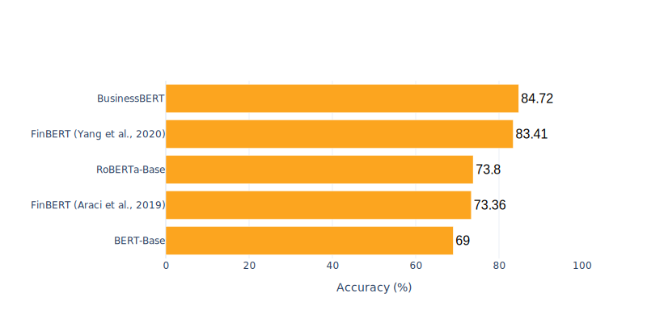

With recent studies showcasing the added value of pretrained general-purpose language models like
Bidirectional Encoders from Transformers (BERT), they are widely adopted across domains.
By transferring the BERT architecture on domain specific text, related research achieved significant performance improvements in i.e. the biomedical and legal domain. Due to its availability and immediate impact on decision-making,
processing textual information is particularly relevant in the financial and business domain. In this research project we investigate the impact of domain specific pretraining approaches on business language understanding.
We perform industry classification (IC) based on earnings conference call transcripts (Li et al., 2020) annotated with SIC labels (www.sec.gov/edgar/searchedgar/companysearch) of the corresponding companies. We explain model prediction results in respect to industry-sensitivity using integrated gradients (Sundarajan et al., 2017).
We consider the following pretrained language models for the benchmark:
The BERT-Base model is a general-purpose language model trained on two corpora, namely the BooksCorpus containing 0.8 billion words and the English Wikipedia containing 2.5 billion token with a total size of 16 GB. During pretraining, the model performs the following objectives: Masked language modelling (MLM), which entails predicting masked words in the input text sequence and next sentence prediction (NSP), predicting whether a given sentence is succeeding the input text sequence.
Araci et al., 2019 fine-tune the BERT-Base model on financial news articles using a subset of the Reuters TRC2 (0.03 billion words) corpus with the objective of improving downstream performance on financial sentiment analysis tasks.
FinBERT (Yang et al., 2020) is based on the BERT-Base transformer architecture, however the authors pretrain the model from scratch using financial communications corpora: Corporate Reports (2.5 billion words), Earnings Call Transcripts (1.3 billion words) and Analyst Reports (1.1 billion words). The authors report performance improvements compared to BERT-Base on financial sentiment analysis.
RoBERTa-Base introduced by Liu et al., 2019, builds upon the BERT-Base transformer architecture, while adjusting the pretraining approach in order to improve robustness. They i.a. do not consider NSP as a pretraining objective and focus on the MLM, increase the number of pretraining steps and corpus size. The corpora consist of BooksCorpus, CC-News, OpenWebText and Stories with a total size of 160 GB.
BusinessBERT (Available soon) trained on three business communication corpora, namely CompanyWeb (0.6 billion words), MD&A disclosures (1 billion token) and scientific papers in the business domain (0.6 billion token). Building upon the BERT-Base architecture, the pretraining objectives include MLM, NSP. Industry classification (IC) is used as an additional pretraining objective, aiming to embed industry information in the language representation of the model.
We enrich the earnings conference call dataset (Li et al., 2020) with SIC labels obtained from the SEC website (www.sec.gov/edgar/searchedgar/companysearch). We retain companies with a valid SIC label, resulting in 246 companies. The textual content of the earnings conference call transcripts are split in separate text documents based on sentence boundaries. Text documents containing less than 40 words are removed, resulting in 956 text documents.
We perform industry classification using the two-digit SIC label. The models are trained for max. 10 epochs with a learning rate of 5e-5. We report the downstream performance on the holdout set.

In order to obtain better understanding in the model predictions and attribution of individual words in the text, we apply the integraded gradients method in respect to the predicted industry category (Sundarajan et al., 2017). By analyzing the word attribution results, we provide additional insight in the models' understanding of industry specific language and terminology. This supports the process of explaining model prediction results and possible unintended model behavior.
We focus the analysis on text documents correctly classified by BusinessBERT, but incorrectly classified by BERT-Base or FinBERT (Yang et al., 2020) and vice versa.
The results are included in the table below, with blue indicating strong attribution towards the predicted category and red indicating low attribution towards the predicted category (possibly indicating evidence for a different industry category).